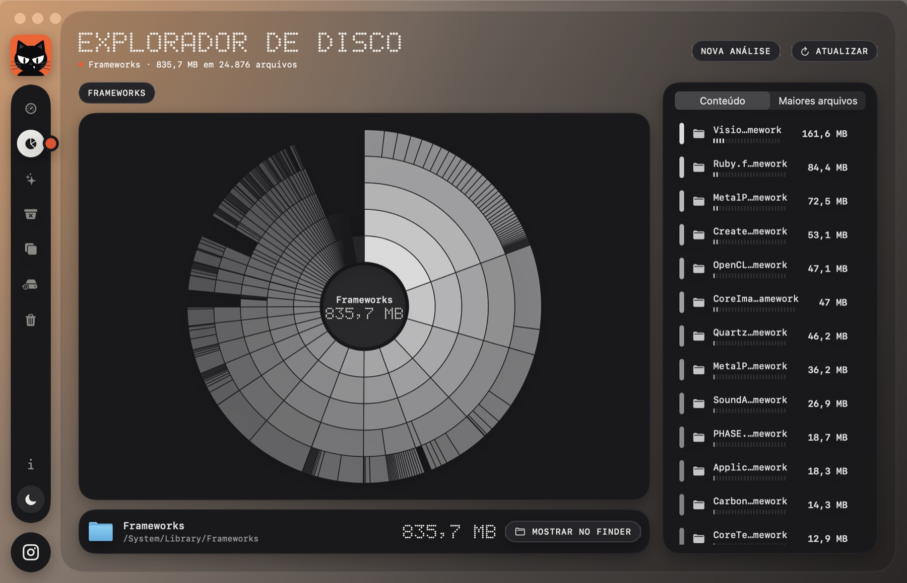
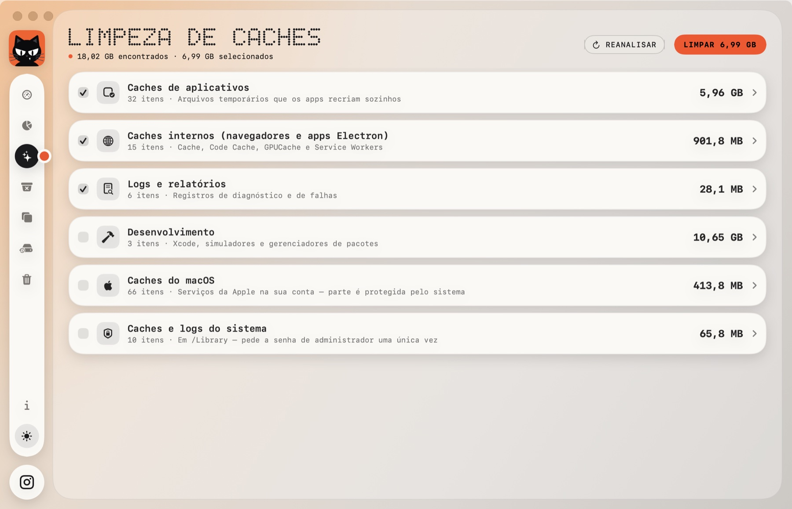
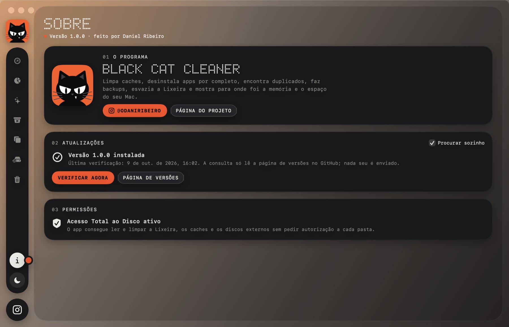

Limpeza e monitoramento para macOS. Limpa caches, desinstala apps por completo, encontra duplicados, esvazia a Lixeira e mostra para onde foram a memória e o espaço do seu Mac.
Gratuito · macOS 14 ou mais recente · Apple SiliconOito ferramentas em um painel só
Tema escuro e claro, com um clique



Cinco papéis de parede, para computador (5K) e celular
Leva um minuto
01Passo a passo
- Baixe o arquivo .dmg pelo botão abaixo.
- Abra o .dmg e arraste o Black Cat Cleaner para Aplicativos.
- Na primeira vez, clique com o botão direito no app e escolha Abrir. O app não é assinado pela Apple, então o macOS pede essa confirmação.
- Na tela Sobre, ative o Acesso Total ao Disco para a limpeza funcionar sem pedir autorização a cada pasta.
02Privacidade
Tudo acontece no seu Mac. O app não coleta nem envia nada. A única conexão que ele faz é ler a página de versões no GitHub para saber se há atualização.
03Atualizações
O app avisa quando sai versão nova e se atualiza com um clique, conferindo a integridade do arquivo antes de instalar.